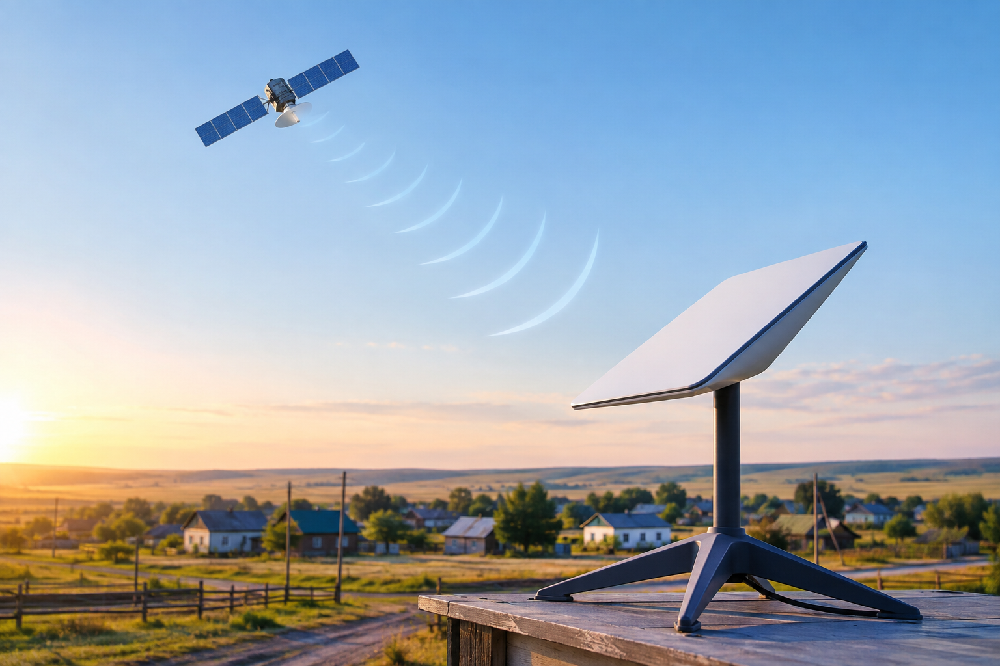
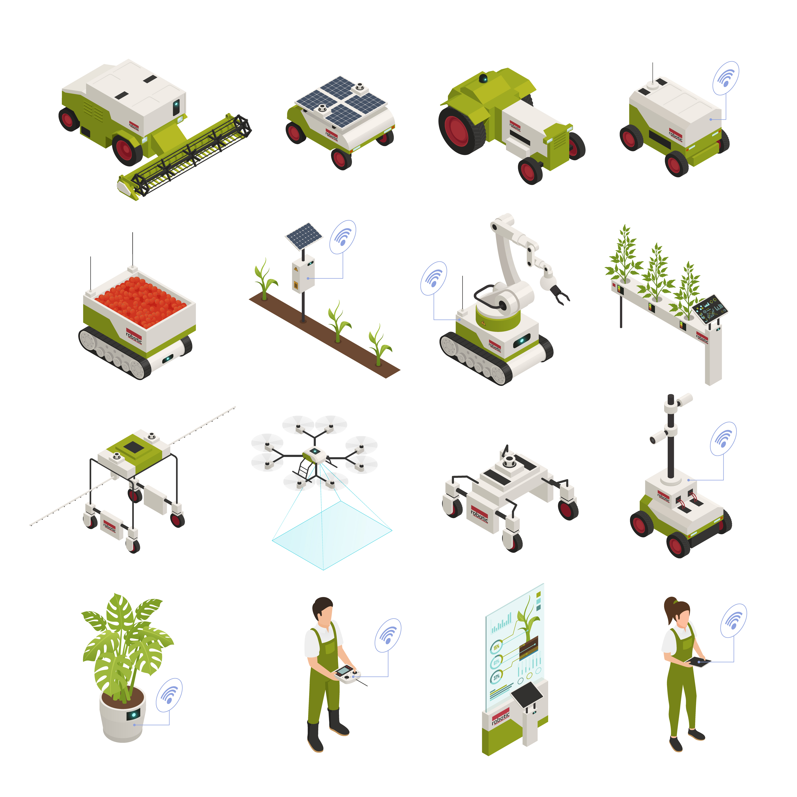
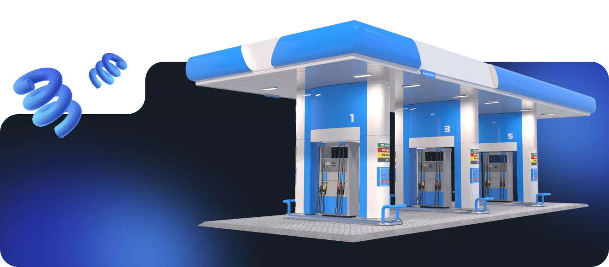
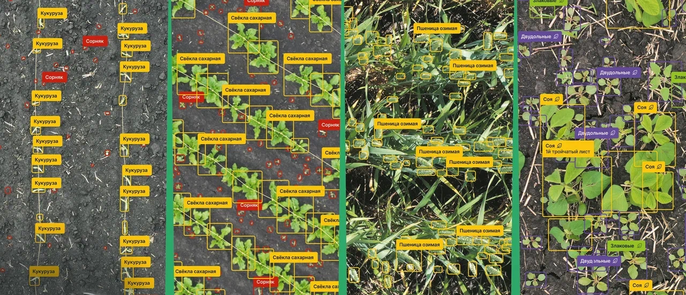

Мы обеспечиваем 100% покрытие полей радиосигналом. Это фундамент для обмена данными между комбайнами, дронами и диспетчерским центром.

Навигационные блоки, интегрированные в штатные электронные системы тракторов, непрерывно передают данные о состоянии машины по GPS и ГЛОНАСС.

Комплекс для полного контроля нефтепродуктов исключает человеческий фактор: от приемки топлива на склад до попадания в бак спецтехники.

Интеллектуальные камеры и дроны собирают визуальные данные для анализа урожая и защиты периметра, экономя ресурсы хозяйства.